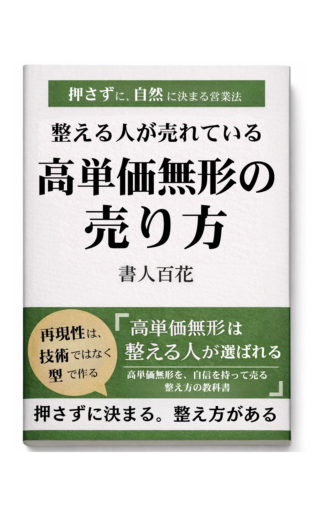

高単価の無形商品を扱っていると、こんな場面に出会うことがあります。
ヒアリングも丁寧にした。
提案も、相手の状況に合わせて組み立てた。
こちらとしては「ここまで整えたなら、きっと前に進めるはず」と思っている。
それなのに最後は、
で終わってしまう。
その瞬間、胸の奥が少し冷える感じがして、帰り道に、ひとりで反省会が始まります。
もっと分かりやすく説明すればよかったのかな。
価格の出し方が、重く感じさせたのかな。
そもそも、私たちのサービスは魅力が弱いのかな。
相手の温度が低かっただけ…？でも、手応えはあったのに。
もしあなたが、こういう経験をしているなら。まず最初に伝えたいことがあります。
高単価無形が決まらない理由は、あなたの説明が下手だからではありません。むしろ、丁寧に説明できる人ほど、まじめな人ほど、ハマりやすい落とし穴があります。
それは――
相手は「商品」を買っているのではなく、「安心して決められる状態」を買っている、ということです。
モノなら、まだ判断がしやすいんです。形がある。性能が見える。比較もしやすい。買ったあとをイメージできる。最悪、合わなければ手放すこともできる。
でも無形は違います。
見えないものに、見えない未来を預ける。これが、無形商品を買うということです。
だから高単価無形の営業では、「価値を伝える」前に、もっと大事なことが起きています。相手の頭の中にある怖さや迷いを、きちんと整理して、ほどいていくこと。
営業の現場では、ついこう考えてしまいます。
もちろん、断り文句として使われる場合もあります。でも、高単価無形で惜しい失注が起きるときの「検討します」は、もう少し違う意味のことが多いです。
相手は前向き。でも、決める材料がまだ揃っていない。
これは、あなたの価値が足りないという話ではありません。営業が弱いという話でもありません。ただ、相手の中に残っている不安を、まだ扱いきれていない。それだけなんです。
そして、その不安は大きく分けると、だいたい4つに整理できます。
高単価になるほど、これらが少しでも残っていると、人は慎重に決断を先送りします。
だから私たちは、こう考えるようになりました。営業でいちばん大事なのは、押すことでも、上手く話すことでもない。不安が残らないように、意思決定を設計すること。
ここで、営業の定義を少しだけ変えます。
「営業＝相手を説得して買ってもらうこと」ではなくて、「営業＝相手が自分で納得して決められる状態を整えること」
この定義に立つと、やるべきことがとてもシンプルになります。
高単価無形の営業は、話し方よりも組み立て方が大きい。私たちはそう感じています。
この本は、話術の本ではありません。その場で言い返すテクニック集でもありません。高単価無形を扱う人が、明日からこうなれるための本にします。
そして何より、売れる／売れないを運任せにしない。成果を再現できる状態にしていく。
次章から、いちばん大事な話を始めます。高単価無形で成果が安定する人は、例外なくここから始めています。
「誰に売るか」
売り方の前に、売る相手を間違えないこと。受注しない勇気を持つこと。勝てる案件だけを選べるようになること。ここが整うだけで、営業は驚くほど楽になります。
次章ではまず、「良い客／危険な客／地雷案件」を見分ける基準から、一緒に整理していきます。
高単価の無形商品は、営業の難易度が少し特殊です。理由はシンプルで、買う側にとって見えない不安が大きいから。
形がある商品なら、比較もしやすい。買ったあとを想像しやすい。最悪、合わなければ手放すこともできる。でも無形は違います。
高単価になるほど、この不安は強くなります。そして不安が強いほど、人は無意識に安全策を取りたくなる。それが、要求として表に出ることがあります。
「もっとやってくれませんか」「それも含めて欲しいです」「もし成果が出なかったら…」「他と比べてから決めたいです」
ここで勘違いしやすいのは、こうした言葉を「相手が面倒な人だから」と片付けてしまうこと。そうではなく、もっと本質的な話です。
高単価無形の成約と満足は、「売り方」以前に、受ける相手で決まります。この章では、そこを丁寧に整理します。
高単価無形でトラブルが起きるとき、原因はだいたい同じです。期待と範囲と役割分担が、決まらないまま契約してしまう。
無形商品は、提供する側の仕事が見えにくい。受け取る側がやるべきことも見えにくい。だから、放っておくとこうなります。
ここで怖いのは、どちらかが悪人じゃなくても起きることです。まじめな人同士でも、簡単に起きます。つまり高単価無形では、相性より先に条件を揃える必要があります。
高単価無形では「熱意のある人を選ぼう」と言われることがあります。でも、熱量は波があります。初回だけ熱い人もいるし、不安でテンションが上下する人もいる。
大事なのは熱量よりも、もっと安定したものです。姿勢です。
この姿勢がある相手とは、商談が短くなります。そして受注後の満足も高くなります。反対に、この姿勢がない相手ほど、商談は長く、決まりにくく、決まっても燃えやすい。
ここでひとつ、安心してほしいことがあります。危険な相手＝悪い人、ではありません。多くの場合、未整理なだけです。
こういう相手は、整理さえできれば「良いお客さま」になります。だから、最初から切り捨てる話ではありません。ただし問題はひとつ。未整理のまま、整理に乗ってこない場合。このとき、高単価無形は一気に燃えやすくなります。
高単価無形でいちばん避けたいのは、契約後に「こんなはずじゃなかった」が始まることです。それを防ぐには、相手の性格を当てる必要はありません。見るべきは条件です。
ここまで読んで、「あるある…」と思った方もいるはずです。でもここで大事なのは、相手を責めることではありません。条件が足りないまま契約すると、誰でも苦しくなるという事実です。だから営業でやるべきことは、断る技術ではなく、条件を揃える技術です。
高単価無形では、契約前に合意しておくべきことがあります。これが揃うほど、成約率も満足度も上がります。最低限、次の5つです。
この5つを揃える話をするとき、相手の反応は二つに分かれます。
前者は、良いお客さまになりやすい。後者は、そのまま受けると燃えやすい。つまり、ここは線引きではなく、お互いが安心して進めるための確認です。
最後に、今日からそのまま使える形に落とします。高単価無形の見極めは、難しい診断ではなく、質問でほぼ決まります。
質問1：今回いちばん優先したい変化（成果）は何ですか？
優先順位が決められるかが出ます。
質問2：その変化のために、こちら以外で必要な協力は何がありますか？
相手が自分ごとで動けるかが出ます。
質問3：決めるなら、何が揃えば安心して決められますか？
不安の種類が出ます。そこを材料で解消できます。
この3つで、相手の姿勢と条件不足がかなり見えます。
高単価の無形商品が売れないとき、多くの場合、原因は商品力ではありません。伝え方の順番が、少しだけズレています。
高単価になればなるほど、人は商品説明を聞いても決められなくなります。なぜなら、高単価で買うものは、商品そのものではなく、その先の変化だからです。
相手が本当に買いたいのは、これです。
ここが明確になると、商談は驚くほど進みやすくなります。逆にここが曖昧なままだと、どれだけ丁寧に説明しても「検討します」で止まります。
この章では、高単価無形で売れる人が必ずやっている「変化の設計」を、順番に整理します。
たとえば、コンサルや講座なら「知識」や「動画」を買っているわけではありません。制作や代行なら「納品物」だけを買っているわけでもありません。相手が欲しいのは、その先にある変化です。
売上が伸びる、集客が安定する、忙しさが減る、言葉が届くようになる、仕組みが回るようになる、自信が戻る。
ここで注意したいのは、変化は理想の未来だけでは弱いことです。高単価ほど、相手は慎重になります。慎重な相手は、理想の未来より先に、現状の不安や痛みを見ています。
だから、変化を売るときは、2つがセットになります。
どちらか片方だと、決断が止まります。
変化を設計するとき、いきなり理想の未来を語ると、ふわっとします。そして、ふわっとすると高単価は通りません。そこでおすすめしたいのが、変化を3層に分けて考える方法です。
| 層1：目に見える成果 （数値・結果・状態） |
例：問い合わせが増える、成約率が上がる、文章が書けるようになる、制作が回るようになる |
|---|---|
| 層2：再現できる状態 （仕組み・スキル・判断基準） |
例：次も同じように作れる、改善できる、判断が速くなる、迷いが減る |
| 層3：感情の変化 （安心・自信・余白） |
例：怖くなくなる、焦らなくなる、落ち着いて進められる、自分を信じられる |
高単価になるほど、層2と層3が重要になります。なぜなら、相手は一発の結果より、戻れない安心を買いたいからです。ここが揃うと、価格が「高い」ではなく「妥当」に変わります。
変化を伝えても刺さらないとき、よくあるのはこれです。「提供者側の言葉になっている」。
たとえば、こちらがよく使う言葉。「ブランディング」「ファネル」「導線設計」「ライティング改善」「運用最適化」「コンサルティング」。これらは間違っていません。でも相手の頭の中は、もっと生活に近い言葉で動いています。
「何を書けばいいか分からない」「やることが多すぎて止まる」「頑張ってるのに反応がない」「何が正解か分からなくて怖い」「今のままだとまずい気がする」
高単価無形で強いのは、相手の言葉を拾って、整理して、変化の形に言い直せる人です。商品を説明する前に、相手の世界を翻訳してあげる。それが結果的に、いちばん強い営業になります。
変化を売る、というのは、夢を語ることではありません。相手が安心して選べる形にして渡すことです。そのために必要なのが、3点セットです。
ここでいう証拠は、実績だけではありません。再現性（なぜ起きたかの説明）、適用条件（誰に向いていて、誰に向かないか）、手触り（どう進むかが具体的に想像できる）も証拠になります。特に、適用条件を言える人は強いです。「この人は無理に売らない」と伝わるからです。
高単価無形で起きる不幸の多くは、期待値のズレです。相手は魔法を期待している、こちらはプロセスを提供するつもり。このズレが不満を生みます。
これを防ぐために、変化を語るときは、必ずセットで伝えます。
誠実に聞こえるだけではありません。結果的に、成約率も上がります。なぜなら、安心して決められるからです。
最後に、変化を短く強く言える形にします。商談でも、LPでも、提案書でも使えます。
このテンプレに乗せるだけで、言葉が整います。説明の量を増やすより、決断の材料を揃える方が、ずっと効きます。
高単価の無形商品では、初回商談の役割が少し特殊です。多くの人が、初回で課題を特定しようとします。もちろん課題を聞くことは大切です。でも実際に初回で決まるのは、課題の正解ではありません。
決まるのは、次の2つです。
この2つが揃うと、商談は自然に進みます。揃わないと、どれだけ丁寧に話しても最後は止まります。この章では、初回商談を「情報収集の場」から「意思決定を前に進める場」に変える方法を整理します。
高単価の無形商品を検討する人は、だいたい困っています。困っていないのに高単価は動きません。ただし、困っているからといって、課題が整理されているわけではありません。むしろ逆です。困っている人ほど、頭の中はぐちゃぐちゃです。
やることが多すぎる、何が原因か分からない、どれも大事に見える、優先順位が決まらない、何から手をつければいいか分からない。
この状態で提案しても、相手は決められません。決められないと、人は安全策として先送りします。だから初回でやるべきことは、これです。
相手の中にある複数の論点を、整理して、一本にする。これだけで価値が出ます。
初回でいちばん大事なのは、相手にこう言わせることです。
「いま一番止まっているのは、ここです」「まずはここを動かすべきだと分かりました」
これが出た瞬間、商談は勝手に進みます。逆に、初回でこれが出ないと、相手の中は「どれも大事」「何からやっても良さそう」「でも怖い」「だから保留」となります。
優先順位が決まると、「何を捨てるか」「次にやること」「予算をかける理由」が自動的に整います。高単価無形は、優先順位が決まった瞬間に強くなります。
初回で必ず契約まで持っていく必要はありません。むしろ、初回で無理に決めさせようとすると、不安が増えます。
初回のゴールは、次の一歩を合意することです。
この合意が取れれば、相手は安心します。安心すると、決断に必要な材料を集め始めます。初回でやるべき仕事は、相手が動き出す状態を作ることです。
高単価無形の初回で軸になる質問は、たった3つです。
質問1 いま一番止まっているのはどこですか？
相手の話が広がりすぎたら、何度でもここに戻します。この質問は、論点を一点に絞るための質問です。
質問2 それを放置すると、3ヶ月後どうなりますか？
人は、痛みが確定しないと動けません。逆に、未来の損失が見えた瞬間に、優先順位が決まります。
質問3 決めるなら、何が揃えば安心して決められますか？
ここで相手の不安が表に出ます。成果の不安、実行の不安、信用の不安、比較の不安。どれが強いかが分かれば、次に揃える材料が見えます。
この3つだけで、商談の質が変わります。
高単価無形の初回では、相手の不安が必ず出ます。不安が出ないなら、まだ本気ではありません。不安を分類すると、対応が簡単になります。
ここで頑張って説得しないこと。不安は押されると増えます。不安は、材料と構造で消えます。
初回を壊すのは、ほとんどこの3つです。
最後に、初回商談を型として置きます。これを使うと、迷いが減ります。
高単価の無形商品で、提案が通らないとき。多くの場合、提案の中身が悪いのではありません。提案の役割を「説明」だと思っていることが原因です。
高単価の提案は、プレゼンではありません。相手を感動させる時間でもありません。提案の役割は、もっと静かで実務的です。
相手があとから見返しても、迷わず決められる状態を作る。社内や家族に説明するときも、同じ結論に辿り着ける状態を作る。つまり提案は、判断を助ける道具です。
この章では、提案を「通すための構造」に落とします。
提案が通らないとき、よくやりがちなのが、情報を増やすことです。実績を増やす、資料を厚くする、サービス内容を細かくする、できることを全部書く。
丁寧に見えます。でも高単価では、これが逆効果になることがあります。なぜなら、判断が難しくなるからです。人は判断が難しいと、いちばん安全な行動を取ります。先送りです。
だから、通る提案の方向性は逆です。情報を増やすのではなく、判断を簡単にする。提案は多さより、選びやすさで勝ちます。
高単価の提案でいちばん強いのは、これです。最初の1ページ（または冒頭1分）で、相手がこう分かる状態。
結論が先にあるだけで、相手の不安が減ります。不安が減ると、質問の質が上がります。質問の質が上がると、合意が積み上がります。
良い提案は、新しいアイデアを見せることではありません。相手の頭の中にある未整理を、整理して返すことです。初回商談で出てきた話を、こうまとめて返します。
この整理があると、相手は安心します。「この人は、ちゃんと分かっている」。この安心が、高単価ではそのまま成約率になります。
提案を判断道具にするために、必ず入れるべきものがあります。地図、道筋、証拠です。
この3つが揃うと、提案が短くなります。短くなるほど、高単価は通りやすいです。
高単価無形が決まるとき、相手の中では合意が積み上がっています。この5つです。
提案書は、この合意を紙の上で再現するものです。
高単価の見積もりで揉めるときは、価格が原因ではありません。条件が曖昧なことが原因です。だから見積もりは、価格表ではなく条件表にします。
これを明文化するだけで、値引き交渉が減ります。相手は「高い」と言いたいのではなく、怖いのです。怖さは、条件で消えます。
高単価では比較されます。比較されること自体は、普通です。問題は、比較の基準が価格しかない状態です。価格だけで比べられると、どうしても苦しくなります。だから先に、判断軸を作ります。
この判断軸が提案に入っていると、価格比較から抜けられます。相手の中で、何を基準に選ぶべきかが整うからです。
最後に、提案を壊す行動を置いておきます。
高単価の無形商品を扱っていると、必ず出会う言葉があります。「検討します」。この一言が出ると、空気が少し止まります。その場では丁寧に終わったのに、後日なにも動かないこともある。だから多くの人が、この言葉を怖がります。
でも、ここで前提を変えます。「検討します」は断り文句のときもあります。ただ、惜しい失注が起きる場面では、意味が違うことが多い。相手は前向き。けれど、決める材料が揃っていない。そして、その不足が言葉になっていない。
つまり「検討します」は、相手の中に残っている不安を、こちらがまだ扱いきれていないサインです。この章では、その不安を見抜き、整え、次の一歩に変える方法をまとめます。
高単価の無形は、買う側にとって失敗したときの痛みが大きい。お金だけではありません。時間、労力、信頼、場合によっては社内評価や家族との関係にも影響する。だから相手は慎重になります。
慎重な相手が判断が難しいと感じたとき、人が取る行動はだいたい同じです。先送りします。
ここで焦って背中を押すと、相手は守りに入ります。守りに入ると、ますます動けなくなります。この場面で必要なのは、押すことではありません。判断を軽くすることです。
判断を軽くするには、相手の中に残っている不安を言葉にし、必要な材料を揃え、次の一歩を確約する。この順番が、いちばん自然です。
「検討します」の中身は、人によって違います。でも多くの場合、迷いの正体は4種類に整理できます。
そして重要なのは、相手はこの不安を、ほぼ必ず言葉で漏らしていることです。
この見抜きができるだけで、「検討します」は怖くなくなります。こちらがやることが一つに決まるからです。不安に合った材料を揃える。それだけです。
高単価無形でありがちな失敗が、ここです。不安が出たときに、熱量で押したり、言い切ってしまう。「大丈夫です」「任せてください」「絶対うまくいきます」。悪気はありません。でも相手が欲しいのは、言い切りではなく、安心の根拠です。
不安は、説得では消えません。材料が揃ったときに消えます。ここでいう材料とは、追加の説明ではありません。相手が判断するために必要な、具体的な根拠のことです。
「検討します」と言われた瞬間に、相手を追い込む必要はありません。でも、何もせずに終わると、そのまま止まります。ここでやるのは、整える質問です。相手の中の未処理を、言葉にしてもらう質問。おすすめはこの順番です。
質問1 いま、どこが一番引っかかっていますか
これで言語化できる相手もいます。ただ、高単価ほど、相手自身も分かっていないことがある。
質問2 引っかかりは、成果の不安、続けられるかの不安、信頼して進められるかの不安、他と比べたい気持ち。この中だとどれが近いですか
ここで相手が答えると、話が具体になります。具体になった時点で、検討が前に進みます。
質問3 決めるとしたら、何が揃えば安心して決められますか
これが出たら、次の一歩が作れます。相手が自分で決める条件を言語化した状態になるからです。
不安が言葉になったら、その場で全部を解決しようとしない方がうまくいきます。高単価ほど、相手は一度持ち帰って整理したい。だから最後は、この形がいちばん自然です。
ポイントは、検討に期限と中身を与えることです。ただの検討しますは止まります。材料を揃える検討は進みます。そして、次回日時まで決まれば、相手は安心して動けます。
高単価の無形商品で、クロージングが苦しくなる理由ははっきりしています。決めてもらうために、こちらが頑張ろうとするからです。でも本来、高単価の決断は相手の中で自然に起きるものです。
押された決断は、契約後にズレやすい。ズレると、不満やトラブルに変わりやすい。だから高単価のクロージングは、押す場ではありません。ここまで積み上げてきた合意を確認し、最後に残っている不安を整え、次の一歩を決める場です。
この章では、クロージングを安心して進められる型をまとめます。
一番やってはいけないのは、相手の迷いを否定することです。「迷っているなら必要ないのでは」「本気なら決められるはず」「いま決めないと変わらない」。こう言われた瞬間、人は守りに入ります。守りに入った人は、決めません。
高単価無形では、迷いは自然です。失敗したときの痛みが大きいから。だからクロージングでは、迷いを消そうとしない。迷いを言語化して、材料で整える。これが正解です。
クロージングでやりがちな質問があります。「いかがされますか」「進めますか」「申し込みますか」。この聞き方だと、相手は防衛します。防衛すると、便利な言葉が出ます。「検討します」。
クロージングで聞くべきことは、決断そのものではありません。決断を止めているものです。おすすめは、次の聞き方です。
相手が決めない理由を言葉にできた瞬間に、クロージングは前に進みます。
高単価無形が決まるとき、相手の中で積み上がっている合意があります。これが崩れていると、最後に押しても決まりません。合意の階段は、次の4つです。
この4つが揃っていれば、最後は自然に決まります。揃っていないなら、クロージングでやることは一つです。揃っていない段を、戻って整える。クロージングは、押し切る場ではなく、整え直す場です。
ここから実務の型を置きます。この順番で進めると、押さなくて済みます。
ステップ1 合意の確認
「現状の理解はこの内容で合っていますか」「いま最優先はここ、という整理で合っていますか」「方針としてはこの方向で合っていますか」。ここで相手がはいと言えるほど、決まりやすい。
ステップ2 条件の確認
「進め方はこの形で大丈夫ですか」「役割分担はこの理解で合っていますか」「期限と確認タイミングはこの形で大丈夫ですか」。ここで曖昧が残ると、契約後に燃えます。だからここは丁寧でいい。
ステップ3 最後の不安を聞く
「最後に、迷いが残っている点があるとしたらどこですか」「決めるなら、何が揃えば安心して決められますか」。不安が出たら、押さずに整える。整える材料が足りなければ、次回に持ち越していい。
ステップ4 次の一歩を確約する
「では、次回までにこの材料を揃えます」「次回はここを確認して、進むかどうかを決めましょう」「日程はいつにしましょう」。ここまで来ると、相手は安心します。安心すると、決断が起きます。
不安が出た瞬間、長い説明に入ると逆効果になることがあります。大事なのは、いったん安心させてから、材料に移ることです。
ここまで整っていて、相手の不安がほぼない場合。このとき初めて、決断の確認をします。ただし、聞き方が大切です。押す聞き方ではなく、自然に前に進む聞き方にします。
買いますか、よりも、次の行動を聞く。高単価では、この方が決まりやすいです。
相手が迷っているとき、こちらが言うべきなのは励ましでも説得でもありません。相手の逃げ道を残しつつ、判断を前に進める言葉です。こう言います。
「今日は無理に決めなくて大丈夫です。ただ、迷いの中身だけは明確にして終わりたいです。どこが一番引っかかっていますか」
これを言われると、相手は安心して本音を出せます。本音が出れば、整えられます。整えられれば、決まります。
クロージングの最後に、必ず入れてほしい一つがあります。次回の約束です。
これがないと、検討が無期限になります。無期限の検討は、ほぼ止まります。決めない人を責める必要はありません。決められる形を作ればいい。クロージングは、その最後の形づくりです。
高単価の無形商品で、いちばん怖いのは失注ではありません。受注したのに、苦しくなることです。
想定より工数が増える、相手の要求が広がっていく、連絡が増え、判断が遅れ、進まない、成果が出ない理由が曖昧なまま責められる、最後は疲弊して関係が終わる。
こういう話は、実はよくあります。そして多くの場合、原因は能力ではありません。境界線がないことです。
ここで言う境界線とは、冷たく線を引くことではありません。お互いが安心して進めるための約束を、言葉にしておくこと。言い換えるなら、成果に集中できる状態を先につくることです。
この章では、受注後に燃えないための境界線の作り方を整理します。
高単価無形は、提供側の裁量が大きい。裁量が大きいということは、相手の要望にも柔軟に応えられてしまうということです。ここが落とし穴になります。
最初は、善意で一つ対応する。すると相手は、「それもやってくれるんだ」と受け取ります。次にもう一つ頼む。また対応してしまう。気づいたときには、最初の契約から範囲が広がり、時間も心も持っていかれる。
境界線がないと、相手が悪いのではなく、関係が崩れます。だから必要なのは、最初に約束を置くことです。
境界線というと、つい「ここまでやる」「ここからはやらない」と考えます。もちろん大事です。ただ、高単価無形ではそれだけだと足りません。燃えるのは範囲だけではないからです。
燃えやすいのは、次の4つです。
範囲だけ決めても、ここが曖昧だと燃えます。
受注後に崩れないために、最初に合意しておく境界線を5つにまとめます。
この5つは、強く言う必要はありません。淡々と、約束として置くだけでいい。
境界線を伝えるとき、最も大事なのは言い方です。ルールとして押し付けると、相手は反発します。でも、こう言うと自然に通ります。
「これはお互いが安心して進めるための取り決めです。途中でズレないように、最初に確認しておきたいです」
境界線は、相手を縛るためではありません。成果に集中するための仕組みです。高単価無形では、相手も不安だからです。だから境界線があると、むしろ安心されます。
受注後に燃える最大の原因は、追加依頼です。追加依頼そのものは悪いことではありません。問題は、扱い方が曖昧なことです。正しい受け方は、これです。
ここで大事なのは、断ることではなく、選択肢を出すことです。
高単価無形で怖いのは、成果が出ないときです。そのとき、相手の中で不安が一気に増えます。ここで揉めないために、最初に置いておくべきことがあります。
成果は、どちらか片方の努力だけで起きない。この前提を、最初に共有しておく。これが境界線です。
境界線を引くと売れなくなる、と感じる人がいます。でも実際は逆です。境界線がある人は、安心されます。
進め方が見える、揉めない未来が想像できる、相手が守るべきことが分かる、こちらが守るべきことも分かる。
高単価無形で相手が買うのは、変化だけではありません。安心も買っています。境界線は、その安心の一部です。
高単価の無形商品は、売って終わりではありません。むしろ、売った後からが本番です。なぜなら高単価無形は、体験そのものが価値だから。体験が良ければ、紹介が生まれ、リピートが生まれ、追加が自然に起きます。
ここで言う「関係性で勝つ」とは、仲良くすることではありません。お互いが安心して成果に集中できる状態を作ることです。この章では、売った後の設計で紹介と継続が増える考え方を整理します。
紹介というと、劇的な成果や感動を想像しがちです。もちろん、それが起きれば強い。でも実際には、もっと静かな理由で紹介が起きます。
高単価無形では、この「安心の体験」が紹介につながります。相手は、自分の知人をあなたに紹介することで、信用を賭けるからです。
受注後に紹介が生まれるかどうかは、最初の1週間でかなり決まります。最初の1週間に相手が抱えるのは、成果への期待より不安です。この不安が消えると、相手は前に進めます。
だから最初の1週間でやるべきことは、成果を出すことではなく、不安を消すこと。具体的には、この3つです。
高単価無形では、相手が成果を実感するタイミングは遅れます。成果が出ているのに、本人が気づいていないことも多い。だから、こちらが相手の変化を言語化します。
「以前は止まっていたのが、ここまで進んだ」「迷いが減った」「判断が速くなった」。この変化を、言葉として渡す。すると相手は安心します。
言語化はセンスではなく、型でできます。次の3点セットで十分です。
継続を増やすために、依存を作ろうとする人がいます。これは短期的には効くことがあります。でも高単価無形では、長期的に必ず崩れます。
継続が増えるのは、依存させたときではありません。相手が自走できる感覚を持ったときです。「判断ができる」「改善ができる」「次の一手が分かる」。この感覚が生まれると、相手は「次もお願いしたい」と思います。
紹介は「紹介してください」と頼むだけでは生まれません。頼んでもいいのですが、最も強いのは、紹介が生まれる場面を設計することです。
紹介が自然に生まれる場面は、だいたい次のどれかです。
このタイミングで、相手が人に話しやすい言葉を渡します。「もし周りに似た状況の方がいたら、話のネタとして使ってください。こういう整理が必要な人は、意外と多いので」。この一言があるだけで、紹介が自然に発生します。
売った後に追加提案をするとき、怖さを感じる人がいます。でも追加提案の本質は売り込みではありません。次の段を見せることです。
「いまはここまで整った」「次に伸びるのはここ」「この順番でやると無理がない」「必要なら、こういう形で伴走できる」。この言い方なら、押し売りにはなりません。相手にとって自然な選択肢になります。
最後に、関係性で勝つ人が、必ず固定しているものがあります。
派手なことはしていません。ただ、安心の仕組みを固定している。この固定があると、相手は安心して進めます。
ここまで読んできたあなたは、もう一つの事実に気づいているはずです。高単価の無形商品が決まるかどうかは、話が上手いかどうかではありません。押し切れるかどうかでもありません。
決まるのは、整え方です。相手の未整理を整理し、不安を材料で整え、判断を軽くし、合意を積み上げる。受注後も燃えない仕組みを置き、安心の体験を固定する。ここまでの流れは、才能ではなく型です。だから、再現できます。
この最終章では、これまでの内容を「現場で回る一つの型」にまとめます。そして、その型をあなたの体に入れる練習方法を、具体に置きます。
型という言葉を聞くと、台本を覚えることだと思われがちです。でも高単価無形の現場は、毎回状況が違います。相手の事情も、温度も、言葉も、判断の条件も違う。
だから型は、同じセリフを繰り返す道具ではありません。型の役割は、迷ったときに戻る場所を作ることです。戻る場所があると、焦りが減る。焦りが減ると、余計な説明が減る。余計な説明が減ると、相手の判断が軽くなる。高単価無形は、この連鎖で決まります。
この本で扱ってきた営業は、一本の流れです。どこかが欠けると、次の段で必ず詰まります。流れはこの8つです。
営業が苦しいとき、技術不足に見えることがあります。でも多くの場合は、順番が崩れているだけです。だから改善はシンプルです。詰まっている場所を特定して、一つ前に戻る。戻す場所が分かれば、現場は静かに改善します。
型は流れです。流れがあっても、現場で詰まるポイントがあります。それが、言葉です。
高単価無形の営業は、相手の言葉を拾い、整理し、整えて返す仕事です。ところが多くの人は、相手の言葉を拾う前に、自分の言葉で説明してしまう。すると相手の中で変化がイメージできず、不安が増え、判断が重くなり、検討に逃げます。
これを防ぐために必要なのが、言葉の棚です。棚を作る項目は3つだけです。「相手がよく言う困りごと」「相手がよく言う不安」「相手が言って喜ぶ変化」。この棚が増えるほど、営業は簡単になります。
型を回すために、現場で迷いが減る質問セットを置きます。全部使う必要はありません。順番が大事です。
営業は現場でしか上達しない。それも半分だけ正しいです。伸びる人は、現場のあとに3分だけ復習します。これで差がつきます。
やることは3つです。
たった3分でいい。これを積み重ねると、言葉の棚が増えます。棚が増えると、型が回り始めます。
忙しいと、型は崩れます。崩れたときにやりがちなのは、やることを増やすことです。でも必要なのは逆です。詰まりの場所を一つに絞る。
詰まりは、だいたいこのどれかです。
場所が分かれば、戻す場所も分かります。戻す場所が分かれば、言うべきことが減ります。言うべきことが減るほど、高単価は決まりやすい。
営業という言葉には、押し売りのイメージがつきまといます。でも高単価無形の営業は、まったく別物です。相手の判断を守る仕事です。
焦らせず、煽らず、迷いを否定せず、材料で整える。決めたあとも燃えない仕組みで支える。ここまでできると、営業は苦行ではなくなります。静かに、誠実に、強い仕事になります。
あなたが扱う高単価無形商品が、本当に価値のあるものならなおさらです。価値があるものほど、相手は慎重になる。慎重な相手ほど、型が必要になる。この本が、その型として残ることを願っています。
ここまで読み進めてくださって、ありがとうございます。
私たち書人百花は、ずっと同じ場面を見てきました。真面目で、誠実で、相手のことを考えられる人ほど。高単価の無形商品を扱うときに、静かに傷ついていく場面です。
丁寧に聞いた。一生懸命に整えた。相手のために、少し背伸びもした。それでも最後は、「検討します」で終わってしまう。その帰り道に、言葉にできない疲れが残る。
もう少し上手く話せたら、もう少し説得できたら、もっと強く出られたら。そうやって、自分の価値まで疑ってしまう人がいます。
でも、私たちは逆だと思っています。高単価無形が決まらない理由は、あなたの価値が低いからではない。あなたが弱いからでもない。多くの場合、順番が崩れているだけです。整える場所が、まだ見えていないだけです。
そして、ここがいちばん大事なところです。営業は、相手を押す仕事ではありません。相手の判断を守る仕事です。
相手が焦らずに決められるように。不安を置き去りにしないように。後から振り返っても、同じ結論に辿り着けるように。契約したあとに、燃えないように。そのために、こちらが「整える」。それは技術というより、姿勢に近い。
書人百花が大切にしているのは、まさにそこです。
私たちは、誰でも救えるとは言いません。誰とでも組めるとも言いません。でも、約束できることはあります。条件を揃えます。不安を言葉にします。判断を軽くします。合意を積みます。そして、売った後こそ丁寧に整えます。
高単価無形で一番美しい受注は、勝ち取る契約ではなく、自然に決まる合意だと、私たちは信じています。
もし、あなたが今まで「売る」ことに疲れてしまったなら。「押す」ことに違和感を持っていたなら。「もっと強くならなきゃ」と自分を追い込んでいたなら。その感覚は、間違っていません。
あなたが望んでいるのは、派手な営業ではなく、崩れない営業。勢いではなく、再現性。一度きりの成約ではなく、関係が続く仕事。その方向に、あなたの感覚は向いています。
最後に、ひとつだけ。これだけは覚えておいてください。
高単価無形は、説明が上手い人が勝つ世界ではありません。整える人が勝つ世界です。
その整え方は、型になります。型になれば、誰でも育てられます。そして、育てた型は、あなたの人生を守ります。あなたの仕事が、あなたを削るのではなく。あなたの仕事が、あなたを強くする形になること。
書人百花は、そのための言葉と仕組みを、これからも磨いていきます。また、現場で会いましょう。
発行日：2026年3月1日
著 者：書人百花
発行所：HYAKKA Publishing
© Shojin Hyakka. All rights reserved.
無断転載・複製を禁じます。